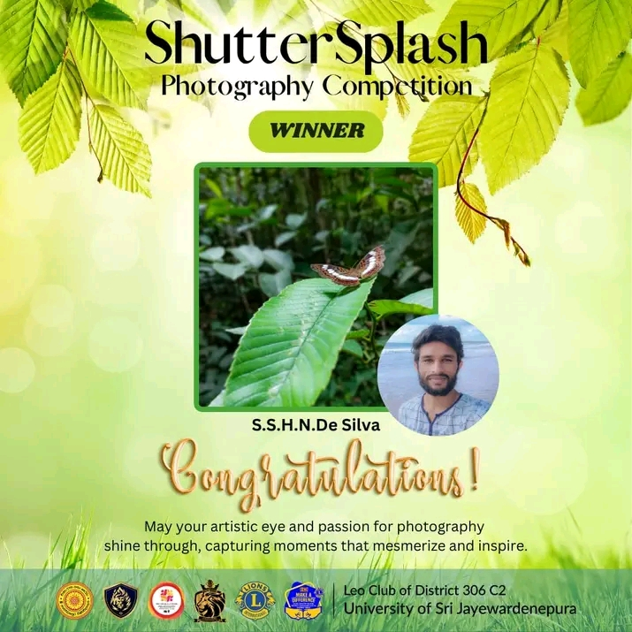
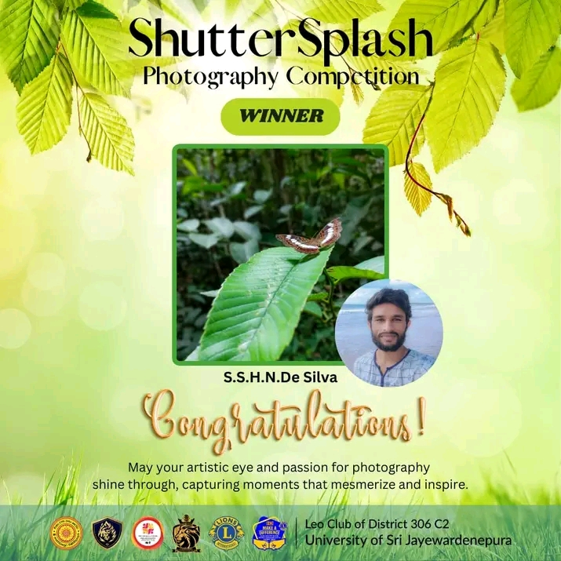
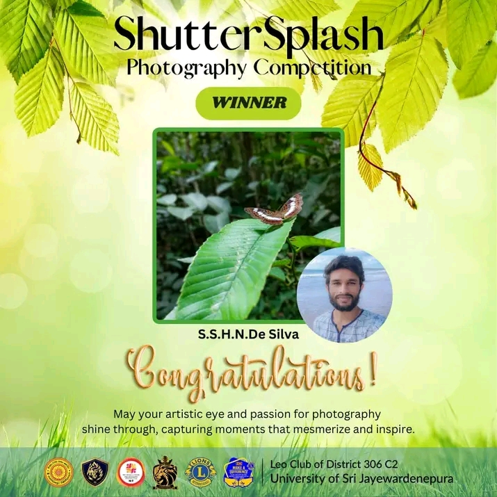

Project Name: ShutterSplash
This online photography competition was organized by our club to raise awareness of the conservation of nature and to provide a platform for aspiring photographers to showcase their talents under the theme of nature. Also, this project assisted in developing strong relationships between the public and our club activities via effective communication. This was one of the major projects conducted to link Leo and Lion Clubs in public to build a good rapport. On the other hand, It attracted many photographers who were eager to showcase their unique perspectives. After its inception, we received 50 submissions. The winner was selected on the “most liked picture” basis and the pictures were showcased on the Official Facebook Page of the Leo Club of District 306 C2 Leo Club of the University of Sri Jayewardenepura
